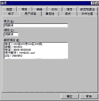
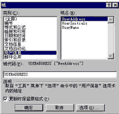

|
|
| 当前位置：电脑报电子版 > 1999 年 > 34 期 > 软件世界 > 在Word中快速插入地址及姓名的技巧 |
| 《 在Word中快速插入地址及姓名的技巧 》 |
| 在日常的文字处理过程中，我们经常需要在文章的末尾插入自己的姓名、地址等信息。对此，不同用户可能会采用不同方法，如有些用户会直接采用手工输入；有些用户则会利用自动图文集或自动更正功能将自己输入的内容替换为地址；还有些用户则是建立一个专门的地址文档，此后需要插入地址时再将该文档中的地址信息插入到相应文档中。相对于上述这些方法，利用Word自带的插入地址功能在文档中插入地址才是最权威的方法！ 在安装Word时，系统会提示用户输入有关用户名、缩写、地址等信息，当时若已经完整地输入了这些内容则可直接使用地址插入功能。如果在安装时没有完整输入这些内容则可执行“工具”菜单的“选项”命令，打开“选项”对话框，然后单击“用户信息”选项卡，分别在“姓名”、“缩写”及“邮件地址”等栏中分别输入自己的地址信息，单击“确定”（如图1所示）。 以后我们就可以利用Word自带的用户信息插入功能直接在文档中插入自己的地址信息了，具体步骤为： 1. 将光标移至需要插入地址信息的位置（一般为文章结尾）； 2. 执行Word“插入”菜单中的“域”命令，打开“域”对话框。 3. 从“域”对话框的“类别”栏中选择“用户信息”选项； 4. 从“域”对话框右边的“域名”栏中选择“User Address”选项（如图2所示）； 5. 如果需要，用户可单击“选项”按钮，打开“域选项”对话框，然后在“格式”栏中选择适当的修饰格式（如大小写、全角、半角等）； 6. 单击“确定”按钮，系统即会在光标所在处插入用户事先输入的地址信息。 当我们的地址信息发生变化之后，采用其它方法插入的地址都必须手工进行修改，而对于采用此方式插入的地址信息，只需在“选项”对话框的“用户信息”栏中对地址信息进行更改，然后在文档中选中地址域后按下F9键对其进行更新，文档中的地址就会自动更新。另外，在前面的第4步中若选择了“User Initials”及“User Name”选项，则还可直接将自己的用户名及用户缩写也插入到文档中，从而进一步满足了日常工作的需要。 (湖北 胡锦承) |
| 下载本期推荐软件 | 页 首 |
| 《电脑报》版权所有，电脑报网站编辑部设计制作发布 |